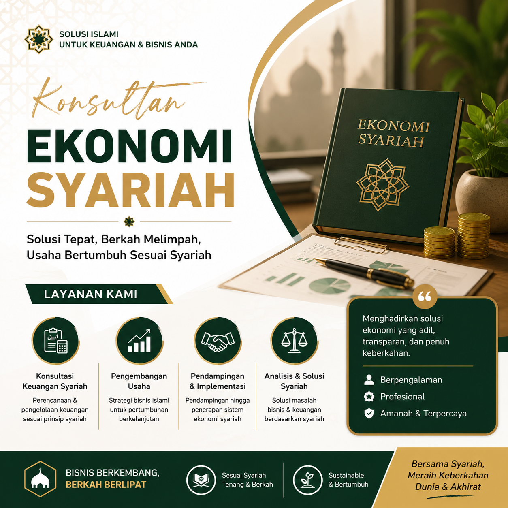
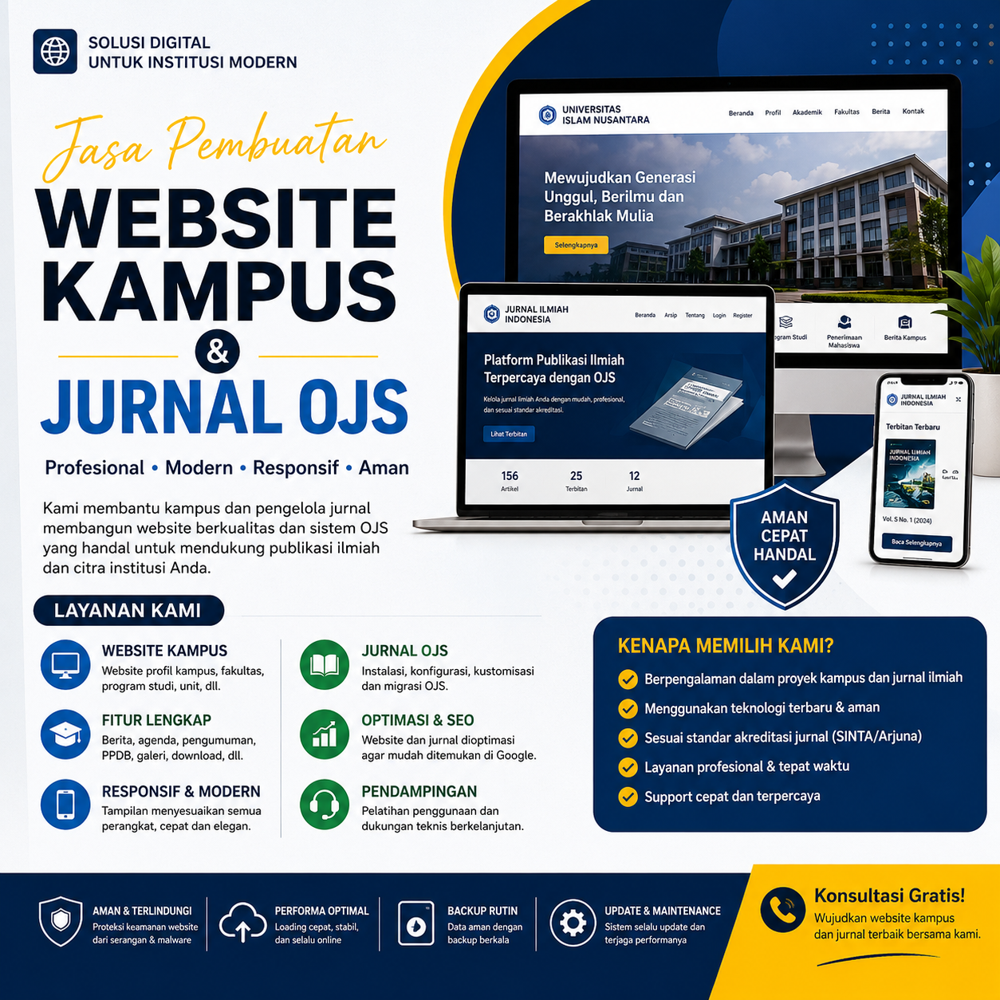

Asli dari Pulau Madura
Menghubungkan keilmuan, teknologi, dan kolaborasi untuk menciptakan sesuatu yang bermanfaat.
Saya adalah seorang profesional yang memiliki minat dan pengalaman di bidang Ekonomi Syariah serta teknologi informasi.
Saya tertarik mengembangkan berbagai solusi yang dapat membantu masyarakat, dunia pendidikan, dan pelaku usaha.
Dalam setiap pekerjaan, saya mengedepankan integritas, inovasi, dan kualitas.
Bagi saya, teknologi merupakan sarana untuk membuat sesuatu menjadi lebih sederhana, efektif, dan memberikan manfaat yang berkelanjutan.
Mengembangkan sesuatu yang sederhana, bermanfaat, dan bernilai.
Konsultasi dan pendampingan dalam bidang ekonomi dan bisnis berbasis prinsip syariah.
Pengembangan website, Website Kampus, Website Jurnal OJS, dan berbagai solusi digital.
Menjaga website tetap aman, stabil, optimal, dan dapat berjalan dengan baik.
Terbuka untuk bekerja sama dengan individu, institusi, perusahaan, dan komunitas.

Berpengalaman sebagai Konsultan Ekonomi Syariah dengan fokus pada konsultasi, pendampingan, dan pengembangan sistem ekonomi berbasis syariah bagi individu, pelaku usaha, serta lembaga.

Pengembangan Website Kampus dan Website Jurnal OJS, mulai dari perencanaan, pembangunan, migrasi, hingga optimalisasi sistem sesuai kebutuhan institusi.
Terbuka untuk berkolaborasi dengan individu, institusi, perusahaan, maupun komunitas dalam berbagai proyek teknologi, pendidikan, dan pengembangan sistem digital.
Punya pertanyaan, ide, atau ingin berkolaborasi?